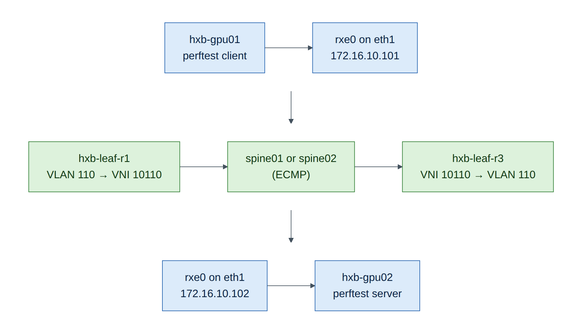
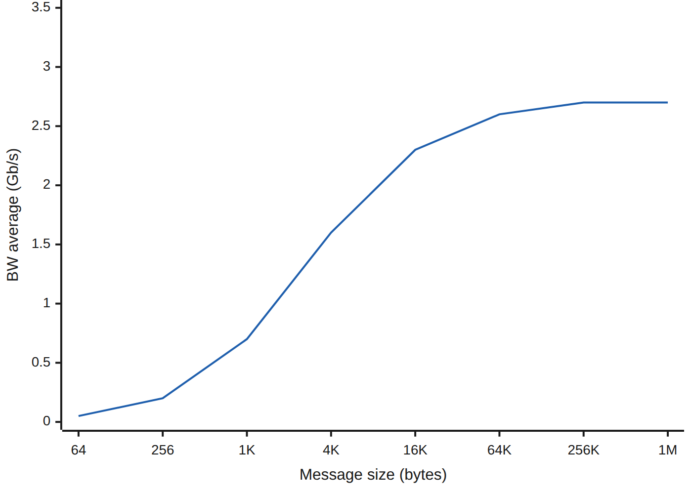
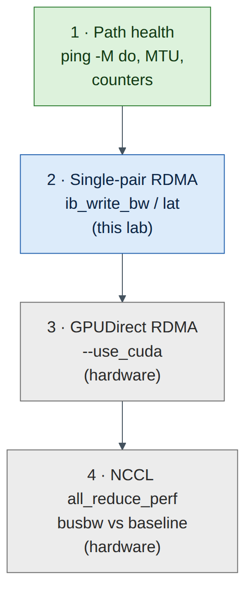

Lab 9 — Verifying End-to-End Performance with perftest over Soft-RoCE¶
Companion to the NCP-AIN Certification Guide
This free lab is part of the hands-on companion to NCP-AIN Certification Guide by Vakeesan Thevarajah (Cloudfoxy Ltd). The book explains the theory, design choices and hardware behaviour behind every step.
Lab at a glance¶
| Book chapters | 19 (perftest and NCCL tests), 3 (RDMA fundamentals), 5 (RoCE marking) |
| Exam objectives | 5.3 Verify low-latency network performance · 5.5 ib_write_bw / ib_write_lat |
| Time | 60 minutes |
| Air resources | hxb-gpu01, hxb-gpu02 and the Ethernet fabric |
| Prerequisites | Lab 3 (Soft-RoCE tools installed on gpu01), Lab 5 (AURORA working across leaves) |
Objectives¶
- Apply Chapter 19's bottom-up test ladder to a real (software) RDMA path across the EVPN fabric.
- Run the perftest suite:
ib_write_bw,ib_write_lat,ib_read_lat,ib_send_bw, with RDMA-CM and with explicit GID indexes. - Read latency output (
t_min,t_typical,t_avg, 99% and 99.9% percentiles) and bandwidth sweeps. - See how MTU changes the RoCE path MTU and the results.
- Diagnose the two classic setup mistakes: wrong GID index and MTU mismatch.
Background¶
On real hardware, Chapter 19's ladder goes: link health → single-pair RDMA with perftest → GPUDirect RDMA → multi-node NCCL. In Air you can climb the first two rungs with Soft-RoCE (rdma_rxe), the Linux kernel's software implementation of RoCEv2. It speaks exactly the same verbs and wire protocol as a ConnectX NIC, so every perftest option, the GID table and RDMA-CM behave as on hardware. What it can't match is speed: the NIC's work is done by a virtual CPU, so expect well under 10 Gb/s and tens of microseconds of latency. In this lab the method matters, not the numbers. Never compare these results with the hardware figures in Chapter 19.

Step-by-step¶
Task 1 — Rung 1: prove the path before testing RDMA¶
Chapter 19's first rule: never run perftest on a path you haven't checked.
-
Addresses and MTU on both hosts (Lab 5 set MTU 9000):
-
Reachability with the largest frame that fits, with fragmentation forbidden:
ubuntu@hxb-gpu01:~$ ping -c 3 -M do -s 8972 172.16.10.102 3 packets transmitted, 3 received, 0% packet loss8972 = 9000 − 20 (IP) − 8 (ICMP). If this fails while a small ping works, stop and fix MTU first (Lab 7, Fault A).
Checkpoint
- Jumbo ping gpu01 → gpu02 succeeds.
Task 2 — Soft-RoCE on both hosts¶
gpu01 has the tools from Lab 3; gpu02 doesn't yet. On hxb-gpu02:
ubuntu@hxb-gpu02:~$ sudo apt-get update && sudo apt-get install -y rdma-core ibverbs-utils ibverbs-providers perftest
ubuntu@hxb-gpu02:~$ sudo modprobe rdma_rxe
ubuntu@hxb-gpu02:~$ sudo rdma link add rxe0 type rxe netdev eth1
On hxb-gpu01, check that rxe0 still exists (it doesn't survive a reboot or checkpoint restore) and recreate it if not:
ubuntu@hxb-gpu01:~$ rdma link show || true
ubuntu@hxb-gpu01:~$ sudo modprobe rdma_rxe ; sudo rdma link add rxe0 type rxe netdev eth1 2>/dev/null ; rdma link show
link rxe0/1 state ACTIVE physical_state LINK_UP netdev eth1
Check the port attributes on both hosts. Note active_mtu: the RoCE path MTU is the largest InfiniBand MTU (256–4096) that fits in the Ethernet MTU.
ubuntu@hxb-gpu01:~$ ibv_devinfo -d rxe0 | grep -E 'state|max_mtu|active_mtu|link_layer'
state: PORT_ACTIVE (4)
max_mtu: 4096 (5)
active_mtu: 4096 (5)
link_layer: Ethernet
(Illustrative.) With Ethernet MTU 9000 the active MTU is 4096; in Lab 3 at MTU 1500 it was 1024.
Find the RoCEv2 IPv4 GID index on each host (Lab 3, Task 4, step 5). With a fresh rxe device on eth1 it is usually 1:
ubuntu@hxb-gpu02:~$ ibv_devinfo -v -d rxe0 | grep GID
GID[ 0]: fe80::5054:ff:fe12:3402, RoCE v2
GID[ 1]: ::ffff:172.16.10.102, RoCE v2
Checkpoint
-
rdma link showACTIVE on both; active_mtu 4096; GID index recorded for both.
Task 3 — Rung 2: bandwidth with RDMA-CM¶
-
Server on gpu02, client on gpu01.
-Ruses RDMA-CM to exchange connection data and pick the right GID automatically;-T 106sets traffic class 106 (DSCP 26 + ECT(0)) as in Lab 3.ubuntu@hxb-gpu02:~$ ib_write_bw -d rxe0 -R -T 106 -F --report_gbits ubuntu@hxb-gpu01:~$ ib_write_bw -d rxe0 -R -T 106 -F --report_gbits 172.16.10.102Expected output (client, illustrative):
-
Sweep all message sizes (
-a) to see where bandwidth levels off:
Plot or sketch bandwidth against message size. The shape is the lesson: small messages are limited by per-message overhead (message rate), large messages by the path (here, the CPU doing the NIC's work).

-
Try a send/receive test for comparison. Two-sided operations need the receiver to post buffers, so results differ slightly from RDMA WRITE:
Task 4 — Latency and tail latency¶
-
Write latency. It's a ping-pong test and reports half the round trip:
ubuntu@hxb-gpu02:~$ ib_write_lat -d rxe0 -R -F ubuntu@hxb-gpu01:~$ ib_write_lat -d rxe0 -R -F 172.16.10.102Expected output (illustrative):
Read it the Chapter 19 way:
- t_typical (the median) is the number to quote. t_min is a best case you'll rarely see.
- The 99% and 99.9% percentiles are the tail. Collective operations wait for the slowest message, so the tail matters more than the average in AI clusters.
-
A large gap between typical and 99.9% means jitter. Here it comes from virtual CPUs being scheduled; on hardware it points to congestion, PFC pauses or a noisy neighbour.
-
Read latency reports the full request-response time, so expect roughly double:
-
Run the write latency test three times and record t_typical and 99.9% each time. Variance between runs is itself a finding.
Run t_typical (µs) 99.9% (µs) 1 2 3
Task 5 — Explicit GID index, and why it matters¶
Without RDMA-CM, perftest exchanges connection data over a TCP socket and uses the GID index you give with -x. Use the index you recorded in Task 2.
ubuntu@hxb-gpu02:~$ ib_write_bw -d rxe0 -x 1 --tclass=106 -F --report_gbits
ubuntu@hxb-gpu01:~$ ib_write_bw -d rxe0 -x 1 --tclass=106 -F --report_gbits 172.16.10.102
It should give the same result as Task 3. On ConnectX NICs the IPv4 RoCEv2 GID is often index 3, and NCCL uses NCCL_IB_GID_INDEX (Chapter 19) or picks it automatically in recent releases.
Task 6 — MTU experiment¶
-
Lower the Ethernet MTU on both hosts to 1500 and re-read
active_mtu: -
Re-run the 64 KB
ib_write_bwtest and compare with Task 3. More, smaller packets per message means more per-packet work; on Soft-RoCE that usually lowers bandwidth. - Restore MTU 9000 on both hosts:
sudo netplan apply(Lab 5's netplan file sets 9000).

Verify¶
- Jumbo ping works gpu01 → gpu02.
-
ib_write_bwruns with-Rand with-x <index>; a bandwidth sweep is saved in~/bw-sweep.txt. - Latency recorded three times with t_typical and 99.9%.
- MTU experiment done and MTU restored to 9000.
Break and fix¶
Fault 1 — wrong GID index
- Inject: run the client with
-x 0(the link-local IPv6 GID) while the server uses-x 1. - Symptom: the test hangs or fails with errors such as
Unable to Connect the HCA's through the linkor a completion error with a retry-exceeded status. - Diagnosis:
ibv_devinfo -v -d rxe0 | grep GIDon both hosts; the two sides must use GIDs they can route to each other (both the IPv4 RoCEv2 GID here). - Fix: use
-x 1on both sides, or-Rso RDMA-CM chooses.
Fault 2 — MTU mismatch
- Inject: set MTU 1500 on gpu02 eth1 only.
- Symptom: small messages work; large
ib_write_bwstalls or reports retries; jumbo ping from gpu01 fails. - Diagnosis: Task 1's jumbo ping, and
active_mtudiffers between hosts. - Fix:
sudo netplan applyon gpu02 to restore 9000.
Clean-up / save state¶
Soft-RoCE devices aren't persistent. That's fine: Labs 10 and 13 recreate them if needed. Save switch configuration and store a checkpoint.
Exam tie-in¶
- 5.3: the bottom-up ladder; always prove path and MTU before blaming RDMA.
- 5.5:
ib_write_bw/ib_write_latserver and client roles,-d,-x,-R,-a,-F,--report_gbits,-T/--tclass. - Reading latency: typical versus tail percentiles; write latency is half round trip.
- GID index selection for RoCEv2 and why RDMA-CM avoids the problem.
Review questions¶
- Why do you run
ping -M do -s 8972before perftest? - What is the difference between
-Rand-x 1? - Which latency figure should you quote, and which should you watch for AI workloads?
- Why is active_mtu 4096 with an Ethernet MTU of 9000, not 9000?
- Why can't you compare this lab's results with Chapter 19's numbers?
Answers¶
- To prove the path carries full-size frames without fragmentation. Otherwise an MTU problem looks like an RDMA problem.
-Ruses RDMA-CM, which resolves addresses and chooses the GID automatically.-x 1exchanges connection data over a TCP socket and uses the GID at index 1 that you chose.- Quote
t_typical(median); watch the 99% and 99.9% percentiles, because collectives wait for the slowest message. - RoCE uses InfiniBand path MTUs (256, 512, 1024, 2048, 4096). 4096 is the largest, and it fits inside a 9000-byte Ethernet frame with the RoCEv2 headers.
- Soft-RoCE runs the NIC's work on a virtual CPU. Bandwidth and latency reflect CPU scheduling, not a ConnectX adapter or the fabric.
Go deeper
The matching book chapters cover the exam objectives for this lab in full, with a Q&A pack of about 40 exam-style questions per chapter.